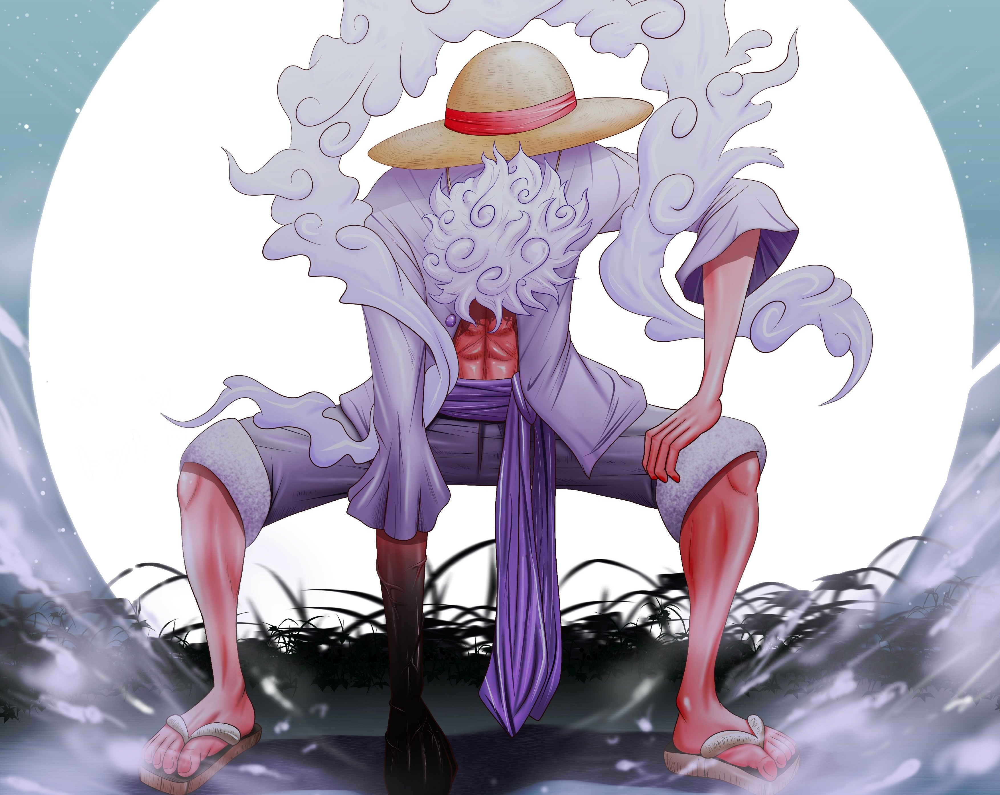
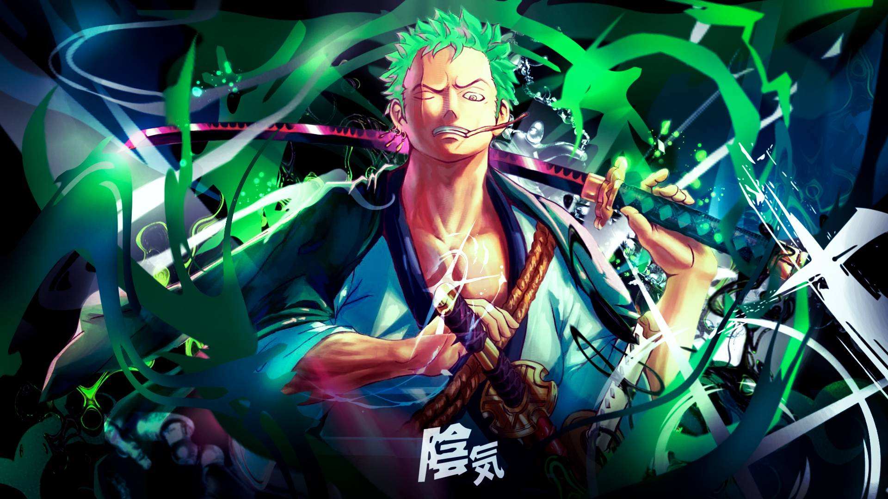
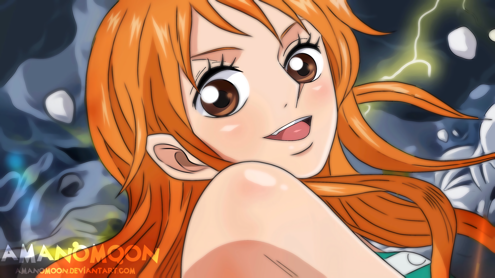
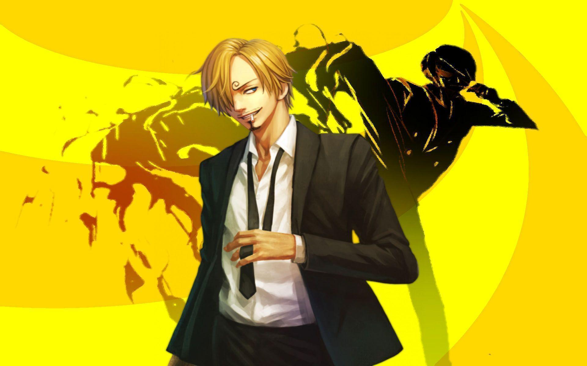
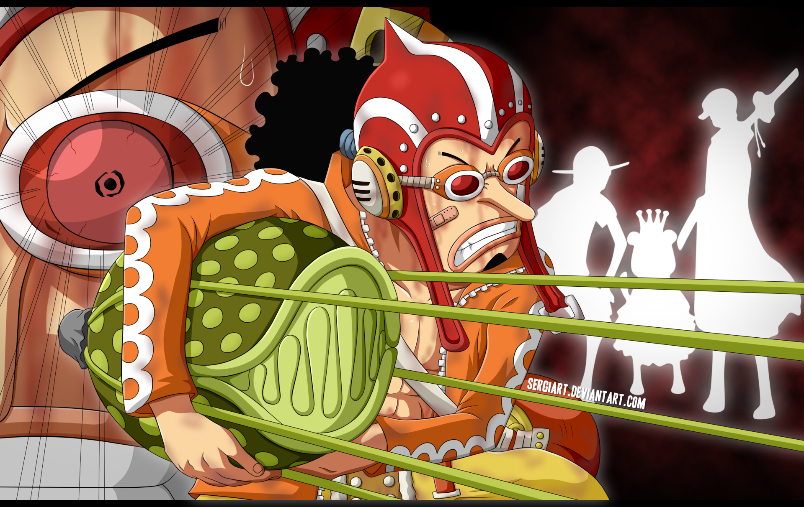
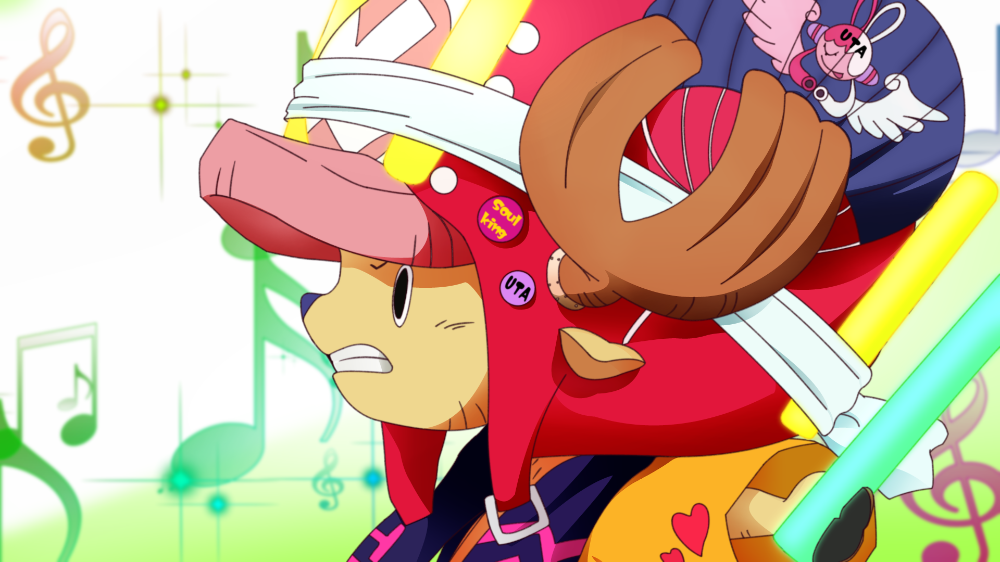
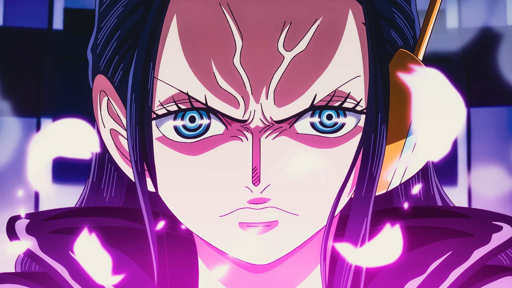
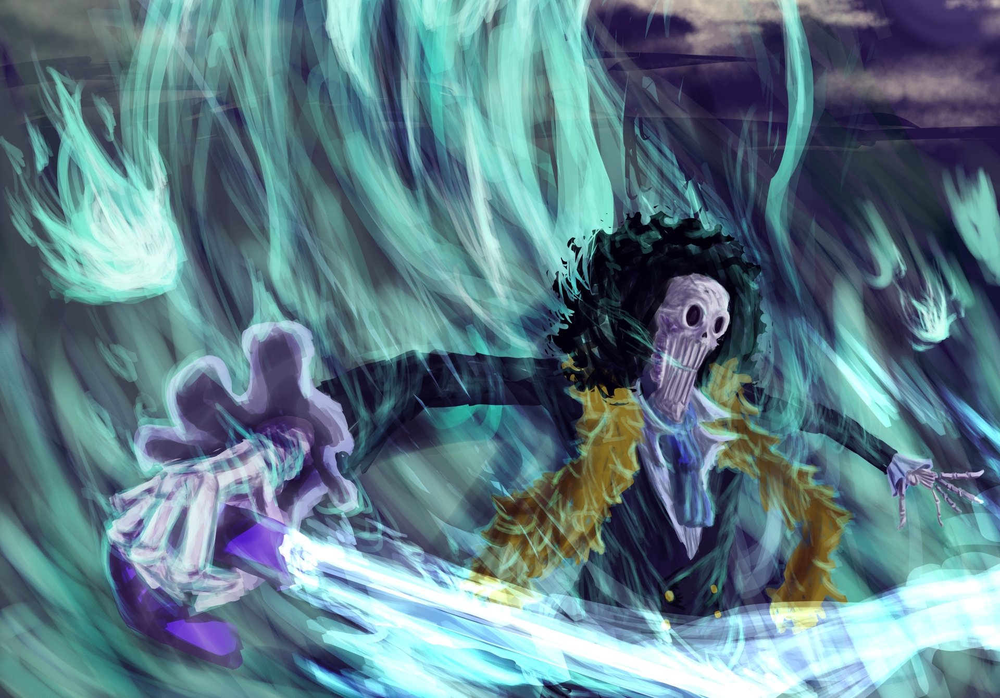
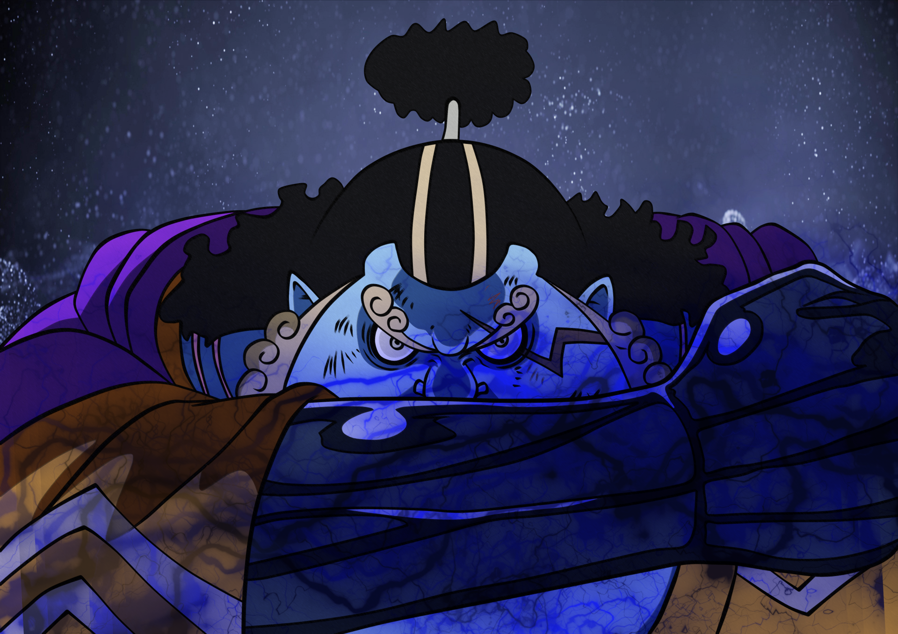

Kru Bajak Laut Mugiwara
Monkey D. Luffy

Monkey D. Luffy adalah karakter utama dari serial One Piece dan kapten dari Bajak Laut Topi Jerami. Luffy dikenal karena sifatnya yang ceria, berjiwa bebas, dan tidak pernah menyerah dalam mengejar mimpinya untuk menjadi Raja Bajak Laut. Ciri khasnya yang paling ikonik adalah topi jerami yang ia terima dari Shanks, seorang bajak laut besar yang menginspirasinya untuk berlayar ke lautan.
Luffy memiliki kemampuan super dari buah iblis Gomu Gomu no Mi, yang memberinya tubuh elastis seperti karet. Dengan kekuatan ini, ia mampu memperluas, meregangkan, dan mengubah tubuhnya untuk berbagai keperluan, baik dalam pertempuran maupun komedi. Namun, seperti semua pengguna buah iblis, Luffy tidak bisa berenang dan akan tenggelam jika jatuh ke dalam air.
Roronoa Zoro

Roronoa Zoro adalah ahli pedang yang tangguh dan salah satu anggota pertama yang bergabung dengan Bajak Laut Topi Jerami di serial One Piece. Zoro dikenal karena ciri khasnya yang ikonik, seperti rambut hijau dan teknik bertarungnya yang disebut Santoryu, di mana dia menggunakan tiga pedang sekaligus—satu di masing-masing tangan dan satu di mulutnya. Ambisinya yang besar adalah menjadi pendekar pedang terkuat di dunia, suatu cita-cita yang mendorongnya untuk terus berlatih dan menghadapi musuh-musuh kuat. Penampilannya semakin ikonik dengan bekas luka besar di dadanya, yang didapat dari pertarungannya dengan Dracule Mihawk, serta penutup mata yang muncul setelah time skip, menambah aura misterius dan kekuatannya.
Nami

Nami adalah navigator berbakat dari Bajak Laut Topi Jerami di serial One Piece. Dia memainkan peran penting dalam perjalanan kru dengan kemampuannya yang luar biasa dalam membaca peta, memprediksi cuaca, dan menavigasi lautan yang berbahaya, terutama Grand Line yang terkenal sulit dipahami. Nami bercita-cita untuk menggambar peta dunia yang lengkap, sebuah mimpi yang mendorongnya untuk terus mengembangkan keahliannya sebagai navigator.
Sebelum bergabung dengan Luffy dan yang lainnya, Nami adalah bagian dari kru bajak laut Arlong, yang memaksanya bekerja sebagai kartografer untuk mengumpulkan uang demi membeli kebebasan desa kelahirannya. Setelah dibebaskan dari cengkeraman Arlong oleh Luffy, Nami secara resmi bergabung dengan kru dan menjadi salah satu karakter kunci dalam perjalanan mereka.
Vinsmoke Sanji

Vinsmoke Sanji adalah koki kapal Bajak Laut Topi Jerami dan salah satu pejuang terkuat di kru. Sanji memiliki keterampilan memasak yang sangat luar biasa, menjadikannya koki berkelas dunia yang selalu memastikan kru mendapatkan makanan terbaik di tengah lautan. Lahir sebagai anggota keluarga bangsawan Vinsmoke, Sanji menolak warisan keluarganya yang terkenal kejam dan lebih memilih mengikuti jalannya sendiri sebagai koki bajak laut.
Sanji terkenal dengan gaya bertarungnya yang unik, di mana ia hanya menggunakan kakinya untuk menyerang. Teknik bertarungnya yang disebut Black Leg Style berfokus pada serangan tendangan yang cepat dan kuat, sehingga ia dapat menjaga tangannya untuk memasak. Tendangan Sanji sangat kuat dan mampu menghancurkan baja atau memanipulasi api, seperti dalam serangan khasnya, Diable Jambe, yang menyalakan kakinya dengan api untuk meningkatkan kekuatan serangannya.
Usopp

Usopp adalah penembak jitu dari Bajak Laut Topi Jerami di serial One Piece dan dikenal karena kepribadiannya yang kreatif, humoris, serta memiliki imajinasi yang besar. Usopp bermimpi menjadi pemberani di lautan, seperti ayahnya, Yasopp, yang juga merupakan penembak jitu dari kru Shanks, salah satu bajak laut terkenal. Meskipun awalnya sering dianggap pengecut dan mudah takut, Usopp tumbuh menjadi anggota yang berani dan sangat penting bagi kru.
Ciri khas Usopp adalah keahliannya dalam menembak, di mana dia mampu mengenai target dari jarak jauh dengan akurasi luar biasa. Selain itu, Usopp adalah penemu yang sangat kreatif. Dia sering menciptakan berbagai alat dan senjata, seperti Kabuto, ketapel raksasa yang ia gunakan dalam pertempuran. Senjata ini dapat menembakkan berbagai proyektil, termasuk peluru ledakan, tabung gas, dan bahkan pop green—tanaman yang bisa tumbuh dengan cepat dan digunakan dalam serangan.
Tony Tony Chopper

Tony Tony Chopper adalah dokter dari Bajak Laut Topi Jerami di serial One Piece. Chopper adalah seekor rusa kutub yang memakan buah iblis Hito Hito no Mi, yang memberinya kemampuan untuk berubah bentuk dan berbicara seperti manusia. Dengan kemampuan ini, Chopper bisa bertransformasi menjadi berbagai bentuk yang berguna dalam pertempuran maupun perawatan medis.
Ciri khas Chopper adalah penampilan fisiknya yang menggemaskan, dengan topi pink berbentuk tongkat dan bentuk manusia yang tampak seperti anak kecil. Dia memiliki kemampuan untuk bertransformasi menggunakan Rumble Ball, sebuah obat yang memungkinkan dia untuk mengakses beberapa bentuk tambahan yang sangat kuat, termasuk Monster Point, yang memberikan kekuatan fisik luar biasa, tetapi dengan risiko kehilangan kendali.
Nico Robin

Nico Robin adalah arkeolog dan anggota dari Bajak Laut Topi Jerami di serial One Piece. Robin dikenal karena kemampuannya membaca Poneglyph, batu kuno yang menyimpan informasi penting tentang sejarah dunia dan Abad Kekosongan. Dia memiliki tujuan untuk mengungkap misteri sejarah dunia dan melengkapi Peta Sejarah yang hilang.
Robin memakan buah iblis Hana Hana no Mi, yang memberinya kemampuan untuk menumbuhkan bagian tubuhnya di mana saja, termasuk di permukaan atau benda lain. Kemampuan ini membuatnya sangat berguna dalam berbagai situasi, baik dalam pertempuran maupun saat melakukan penyelidikan. Dia bisa menciptakan tangan dan bagian tubuh lainnya di tempat yang sulit dijangkau, serta menggunakan kemampuan tersebut untuk menyerang musuh atau membantu teman.
Franky

Franky adalah tukang kapal dan anggota dari Bajak Laut Topi Jerami di serial One Piece. Dia dikenal sebagai seorang cyborg yang memiliki tubuh modifikasi teknologi canggih, menjadikannya salah satu karakter yang paling kuat dan serbaguna di kru. Franky, yang awalnya dikenal sebagai Cutty Flam, mengubah dirinya menjadi cyborg setelah mengalami banyak trauma dan kehilangan di masa lalu.
Franky memiliki berbagai fitur canggih dalam tubuhnya, termasuk senjata tersembunyi seperti meriam dan mesin pemotong di dalam tubuhnya. Dia juga memiliki kekuatan fisik yang sangat besar, mampu mengangkat dan menghancurkan benda-benda berat serta menangani pertarungan berat dengan mudah. Salah satu inovasinya yang paling menonjol adalah Sunny, kapal yang dirancang dan dibangunnya untuk kru Topi Jerami, yang merupakan kapal yang sangat tangguh dan dilengkapi dengan berbagai fitur canggih, termasuk senjata pertahanan dan sistem auto-pilot.
Brook

Brook adalah musisi dan anggota dari Bajak Laut Topi Jerami di serial One Piece. Dikenal sebagai "Sang Skeleton Musician," Brook adalah seorang pria yang telah hidup lebih dari seabad setelah memakan buah iblis Yomi Yomi no Mi, yang memberinya kemampuan untuk hidup kembali setelah kematian dan menjadikannya sebagai kerangka hidup. Sebagai hasilnya, Brook memiliki penampilan sebagai tengkorak dengan tubuh yang tidak memiliki daging.
Sebagai seorang musisi, Brook memainkan biola dan memiliki kemampuan untuk menggunakan musik sebagai senjata. Dia dapat memanipulasi dan mengontrol soul (jiwa) dan menggunakan musiknya untuk menghibur teman-temannya, menenangkan musuh, atau menciptakan efek magis. Kemampuannya sebagai skeleton juga memberinya kemampuan untuk melawan serangan fisik dengan cara yang unik, termasuk kemampuan untuk melewati benda padat dan mempercepat gerakannya dengan cara yang tidak biasa.
Jinbe

Jinbe adalah anggota dari Bajak Laut Topi Jerami dan dikenal sebagai "Raja Hiu" atau "Jinbe-sama". Sebagai seorang ikan hiu dengan kemampuan untuk mengendalikan air, Jinbe adalah seorang fisikawan dan penyihir laut yang memiliki kekuatan dan keahlian bertarung yang sangat tinggi. Dia adalah mantan anggota dari Shichibukai dan memiliki pengalaman bertarung serta hubungan yang mendalam dengan berbagai kelompok dan individu di dunia One Piece.
Sebagai seorang ikan hiu dan pemimpin suku ikan hiu, Jinbe memiliki kekuatan fisik yang sangat besar dan kemampuan untuk menggunakan teknik Fishman Karate, yang memanfaatkan energi air untuk menciptakan serangan yang kuat dan efektif. Selain itu, Jinbe dapat berenang dengan sangat cepat dan mengendalikan air di sekelilingnya untuk meningkatkan kekuatan serangannya atau membuat serangan berbasis air yang canggih.
Jinbe memiliki penampilan yang mencolok dengan tubuh besar yang mirip ikan hiu, dengan kulit biru dan sirip yang menonjol. Dia sering mengenakan pakaian tradisional, termasuk kimono dan ikat pinggang, serta memiliki sikap yang tenang dan bijaksana. Meskipun tubuhnya besar dan kekuatannya menakutkan, Jinbe dikenal karena sikapnya yang sopan, penuh hormat, dan sangat peduli terhadap teman-temannya serta prinsip keadilan.